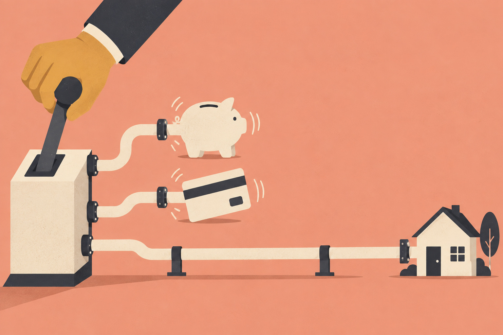
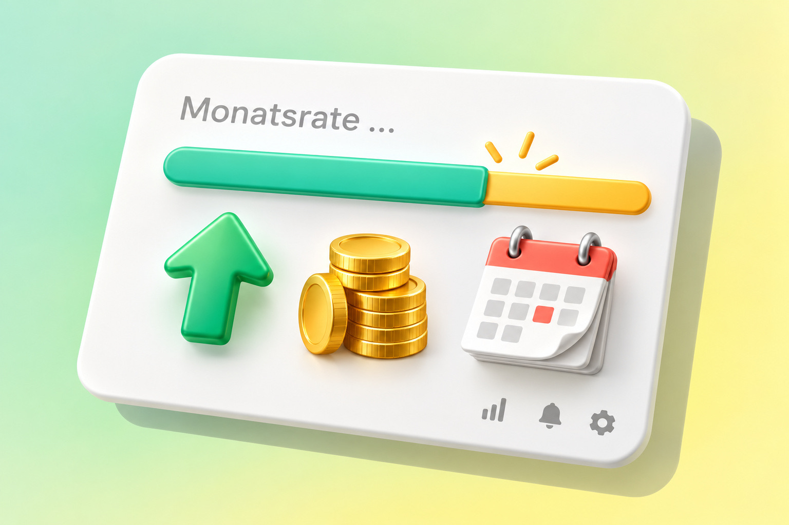

Bauzinsen für Darlehen mit fester Zinsbindung orientieren sich an der Rendite der deutschen Bundesanleihen mit vergleichbarer Laufzeit, nicht am Leitzins der Europäischen Zentralbank. Steigt die Rendite der Bundesanleihe, steigen die Bauzinsen mit, bei manchen Banken taggleich, bei anderen innerhalb von zwei bis drei Wochen. Auf diese Rendite schlagen Banken ihre Refinanzierungskosten, einen Risikoaufschlag sowie Kosten und Marge auf.
Das Wichtigste in Kürze
- Maßgeblich ist die Rendite der Bundesanleihe mit gleicher Laufzeit, nicht der EZB-Leitzins.
- Anfang November 2026: 3,12 Prozent für 5 Jahre, 3,31 Prozent für 10 Jahre.
- 0,5 Prozentpunkte mehr bedeuten bei 300.000 Euro Darlehen rund 125 Euro mehr Rate im Monat.
So setzt sich Ihr Bauzins zusammen (vereinfacht)
Vier Bestandteile, von unten nach oben. Ohne Prozentangaben, weil sich die Anteile laufend verschieben.
Prozentpunkte Bundesanleihe
Monatsrate bei 300.000 € Darlehen
Vereinfachte Darstellung, Größen der Blöcke nicht maßstäblich · Grafik: Fischer & Geserich
Warum der Leitzins nicht entscheidet

Wenn die EZB den Leitzins senkt, erwarten viele, dass Baufinanzierungen sofort günstiger werden. Manchmal steigen die Bauzinsen in solchen Wochen sogar. Der Grund liegt in der Funktion des Leitzinses.
Der Leitzins legt fest, zu welchen Konditionen sich Geschäftsbanken kurzfristig Geld bei der Zentralbank leihen oder dort parken können. Er wirkt deshalb vor allem auf kurzfristige Zinsen: Tagesgeld, Dispokredite, variable Darlehen. Eine Baufinanzierung mit 10 oder 15 Jahren Zinsbindung ist dagegen ein langfristiges Geschäft. Für sie zählen die langfristigen Kapitalmarktzinsen.
Die Bundesanleihe als Maßstab
Eine Bank, die Ihnen 300.000 Euro für 10 Jahre zu einem festen Zins leiht, hat eine Alternative: Sie könnte dasselbe Geld für 10 Jahre in Bundesanleihen investieren. Deutschland gilt als einer der sichersten Schuldner der Welt. Das Ausfallrisiko ist minimal.
Ein Immobilienkredit an eine Privatperson ist riskanter. Der Kreditnehmer kann seinen Job verlieren, die Immobilie an Wert. Eine Zwangsversteigerung kostet Zeit und Geld. Zins ist der Preis für Risiko. Der Bauzins muss also immer über der Rendite der Bundesanleihe liegen. Steigt diese Rendite, steigt der Bauzins mit, weil sich sonst die sichere Anlage für die Bank mehr lohnen würde als der Kredit an Sie.
Für eine Zinsbindung von 10 Jahren ist deshalb die zehnjährige Bundesanleihe maßgeblich, für 5 Jahre die fünfjährige Bundesobligation, für 15 Jahre die entsprechend längere. Anfang November 2026 lag die Rendite zehnjähriger Bundesanleihen bei 3,31 Prozent, die fünfjähriger Bundesobligationen bei 3,12 Prozent.
Wie sich Ihr Bauzins zusammensetzt
Vereinfacht besteht der Zins, den Ihnen eine Bank anbietet, aus vier Teilen:
- Die Rendite der Bundesanleihe mit passender Laufzeit. Sie ist die Basis und der größte Block.
- Der Refinanzierungsaufschlag. Banken refinanzieren Immobilienkredite häufig über Pfandbriefe, also eigene, durch Grundpfandrechte gesicherte Anleihen. Deren Rendite liegt etwas über der von Bundesanleihen.
- Der Risikoaufschlag. Er hängt von Ihnen und vom Objekt ab: vom Beleihungsauslauf, von Ihrer Bonität, von der Art der Immobilie. Hier entstehen die großen Unterschiede zwischen zwei Kunden derselben Bank.
- Kosten und Marge der Bank. Dieser Teil schwankt stärker, als viele denken. Banken, denen Personal für die Kreditprüfung fehlt, heben ihre Konditionen teilweise bewusst an, um nicht mehr Neugeschäft anzunehmen, als sie bearbeiten können.
Die ersten beiden Teile bewegen sich mit dem Markt und betreffen alle Kreditnehmer gleich. Die beiden anderen lassen sich durch die Struktur Ihrer Finanzierung beeinflussen, vor allem über den Beleihungsauslauf.
Warum die Weltlage Ihren Zins verändert
Die Rendite der Bundesanleihe ergibt sich daraus, zu welchen Bedingungen Investoren bereit sind, Deutschland Geld zu leihen. Diese Bedingungen hängen von Faktoren ab, die mit Ihrer Immobilie nichts zu tun haben. Dazu zählen die Inflationserwartung, geopolitische Spannungen, die Zinsentwicklung in anderen großen Märkten und der Finanzbedarf des Staates. Seit 2025 nimmt Deutschland für Verteidigung und Infrastruktur deutlich mehr neue Schulden auf. Mehr Angebot an Staatsanleihen bedeutet tendenziell höhere Renditen und damit steigende Bauzinsen.
Das erklärt eine Erfahrung, die viele Kaufinteressenten machen: Das Finanzierungsangebot verändert sich innerhalb weniger Wochen, ohne dass sich an der Immobilie oder an ihrer Bonität etwas geändert hätte.
Was eine Zinsbewegung in Euro bedeutet

Die Größenordnung lässt sich einfach überschlagen. Steigt die Rendite der Bundesanleihe um 0,5 Prozentpunkte und gibt die Bank diese Bewegung vollständig weiter, erhöht sich der Zins für ein neues Darlehen über 300.000 Euro um 0,5 Prozentpunkte. Das sind 1.500 Euro Zinsen mehr im Jahr oder 125 Euro mehr pro Monat, bei gleicher Tilgung.
Banken geben solche Bewegungen unterschiedlich schnell weiter. Manche passen ihre Konditionen taggleich an, andere brauchen zwei bis drei Wochen, bis die Änderung in ihren Systemen ankommt. In Phasen steigender Renditen kann dieser Zeitversatz für Sie ein kurzes Fenster sein, in Phasen fallender Renditen arbeitet er gegen Sie.
„Die meisten würden sagen, der Bauzins richtet sich nach dem Leitzins der Europäischen Zentralbank. Das ist völlig falsch. Zins ist nichts anderes als ein Risikoindikator.“
Die Einschätzung von Fischer & Geserich
Wer eine Finanzierung plant, sollte die Rendite der Bundesanleihe verfolgen und nicht die Nachrichten zum Leitzins. Wichtiger als jede Marktprognose sind die Teile des Zinses, die sich beeinflussen lassen: der Beleihungsauslauf, die Wahl der Zinsbindung und die Bank, die zur eigenen Situation passt. Bei der Bankauswahl zählt neben dem Zins auch die Vergabepolitik. Sie verändert sich unabhängig vom Zins in Wellen.
Häufige Fragen
Woran orientiert sich der Zins für Immobilienkredite?
An der Rendite der deutschen Bundesanleihe mit gleicher Laufzeit, bei 10 Jahren Zinsbindung also an der zehnjährigen Bundesanleihe. Anfang November 2026 lag deren Rendite bei 3,31 Prozent. Steigt diese Rendite, steigen die Bauzinsen mit.
Warum sinken die Bauzinsen nicht, wenn die EZB den Leitzins senkt?
Weil der Leitzins vor allem kurzfristige Zinsen bestimmt. Bauzinsen mit fester Zinsbindung hängen an langfristigen Kapitalmarktzinsen, also an der Rendite der Bundesanleihen. Diese Rendite kann steigen, während der Leitzins sinkt, etwa wenn die Inflationserwartung oder die Staatsverschuldung zunimmt.
Wie schnell geben Banken Zinsänderungen weiter?
Unterschiedlich. Manche Banken passen ihre Konditionen taggleich an die Bewegung der Bundesanleihe an, andere brauchen zwei bis drei Wochen. Deshalb lohnt sich in Phasen schneller Zinsbewegungen ein Vergleich mehrerer Banken.
Die Bilder in diesem Beitrag wurden mit KI erstellt.
Der Beitrag dient der allgemeinen Information und ersetzt keine Rechts-, Steuer-, Finanzierungs- oder Anlageberatung. Zinssätze in Beispielrechnungen sind Beispielwerte, keine aktuellen Konditionen.